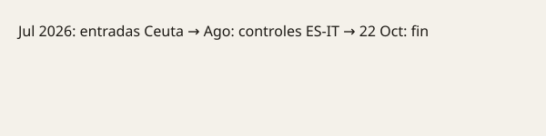

Ceuta · investigación · 22 de octubre de 2026
La Guardia Civil registra instalaciones vinculadas a una ONG en Ceuta en el marco de una investigación sobre presunta entrega de material a migrantes.

Lo que coinciden las redacciones
En la madrugada del 22 de octubre de 2026 la Guardia Civil ejecutó un operativo de entrada y registro en naves situadas en la zona de la Almadraba y en el Tarajal, en Ceuta, vinculadas a la organización No Name Kitchen. El comunicado del Instituto Armado habla de una información recibida sobre la implicación de una supuesta ONG en la incitación a migrantes para atacar a las fuerzas y cuerpos de seguridad. El operativo se describe como abierto. Varios medios locales y nacionales informan de al menos tres personas identificadas o trasladadas para identificación. La investigación se relaciona con las entradas irregulares masivas de finales de julio y con la posible distribución de espray pimienta y armas blancas.
Lo que es solo una cita o una sospecha
Algunos titulares hablan de “reparto de armas” o de “material corrosivo” como si fuera un hecho probado. Fuentes de la ONG declararon a El Pueblo de Ceuta que no se encontró el material buscado y que no tienen relación con las personas interrogadas. El comunicado oficial no detalla el inventario intervenido ni las imputaciones concretas. Hasta que un juez dicte una resolución o se publique el atestado, las acusaciones son el objeto de la investigación, no un veredicto.
Contexto que el lector necesita
Ceuta es una ciudad autónoma en el norte de África. A finales de julio de 2026 se produjo una entrada irregular de decenas de miles de personas desde Marruecos, lo que generó una crisis fronteriza, controles temporales con Italia y un debate político nacional. Las ONG que trabajan en la frontera prestan asistencia humanitaria; las autoridades pueden investigar si esa asistencia incluye material que pueda ser usado contra las fuerzas de seguridad. La distinción entre ayuda humanitaria y facilitación de agresiones es jurídica y factual; solo el procedimiento judicial puede establecerla en este caso concreto.
Lo que la historia no es
No es una condena de la ONG. No es una prueba de que se distribuyeron armas. No sustituye el mandamiento judicial ni el resultado del registro, que al cierre de esta edición no se había detallado públicamente.

Artículos fuente y puntuaciones
| Medio | Titular | T | N | C |
|---|---|---|---|---|
| El Pueblo de Ceuta | La Guardia Civil registra la sede de una oenegé en la Almadraba | 94 | 0 | 95 |
| El Mundo | Registran dos naves de una ONG en Ceuta | 93 | −5 | 90 |
| The Objective | La Guardia Civil registra una ONG en Ceuta que repartía armas blancas | 90 | −15 | 80 |